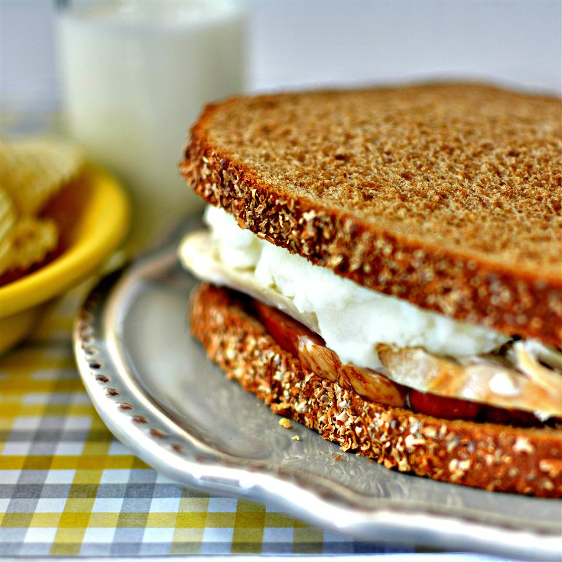

Thanksgiving Sandwich

Easy to make. Simply the best sandwich you will ever taste
You can get this delicious thanksgiving sandwich ready in minutes with simple ingredients. Let me show you how.
Ingredients
- 8 slices ham
- 2 thick slices leftover roast turkey
- half cup mashed potatoes, or as needed
- 4 slices of bread
Steps
- Place ham, turkey, and mashed potatoes on a microwave-safe plate and cook in the microwave until heated through, about 2 minutes.
- Lay out two slices of bread; place 4 slices of ham on each slice of bread.
- Lay out remaining two slices of bread; place 1 slice of turkey on each slice of bread. Spread 1/2 the potatoes on top of each turkey slice. Place turkey slice of bread together with ham slice of bread to form sandwiches.